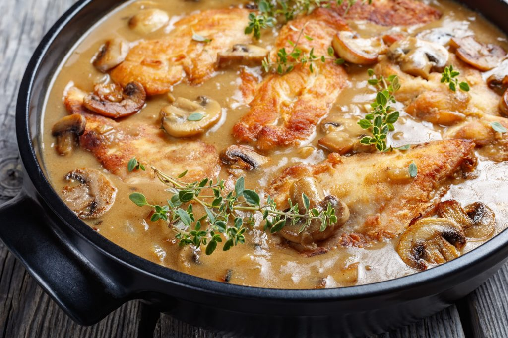

Chicken Marsala

Description
Chicken Marsala is an Italian-style recipe for tender pan-fried chicken breasts in a sweet Marsala wine and mushroom sauce. It's super quick and easy to make for a weeknight dinner AND sophisticated enough for company.
Chicken Marsala is a classic dish loaded with rich, meaty, and herbaceous flavor. A luscious mushroom wine sauce coats fried chicken breast for an unrivaled taste of Italian-inspired goodness. This mouthwatering recipe transforms common pantry ingredients into a show-stopping meal. Learn how to make the best Chicken Marsala right here.
Ingredients
- 1/4 cup of all-purpose flour for coating
- 1/2 tsp salt
- 1/4 tsp ground black pepper
- 1/2 tsp dried oregano
- 4 medium skinless, boneless chicken breast halves - pounded 1/4 inch thick
- 4 tbs butter
- 4 tbs olive oil
- 1 cup sliced mushrooms
- 1/2 cup Marsala wine
- 1/4 cup cooking sherry
Directions
- Gather all ingredients.
- In a shallow dish or bowl, mix together the flour salt and oregano.
- Coat chicken pieces in flour mixture
- In a large skillet, melt butter in oil over medium hear. Place chicken in the pan, and lightly brown.
- Turn over chicken pieces, and add mushrooms. Pour in win and sherry.
- Cover skillet; simmer chicken 10 minutes, turning once, until no longer pick and juices run clear.
- Serve hot and enjoy!